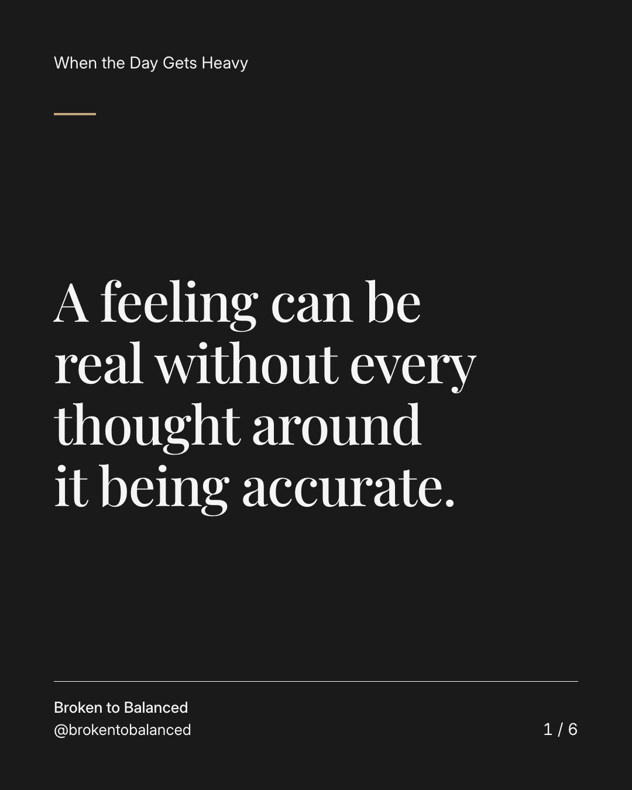
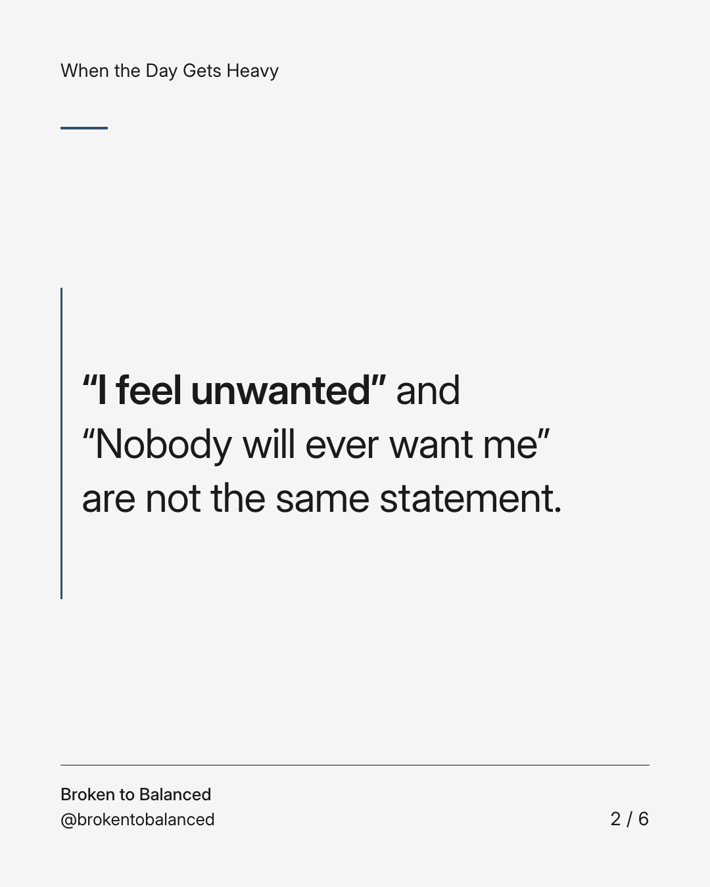
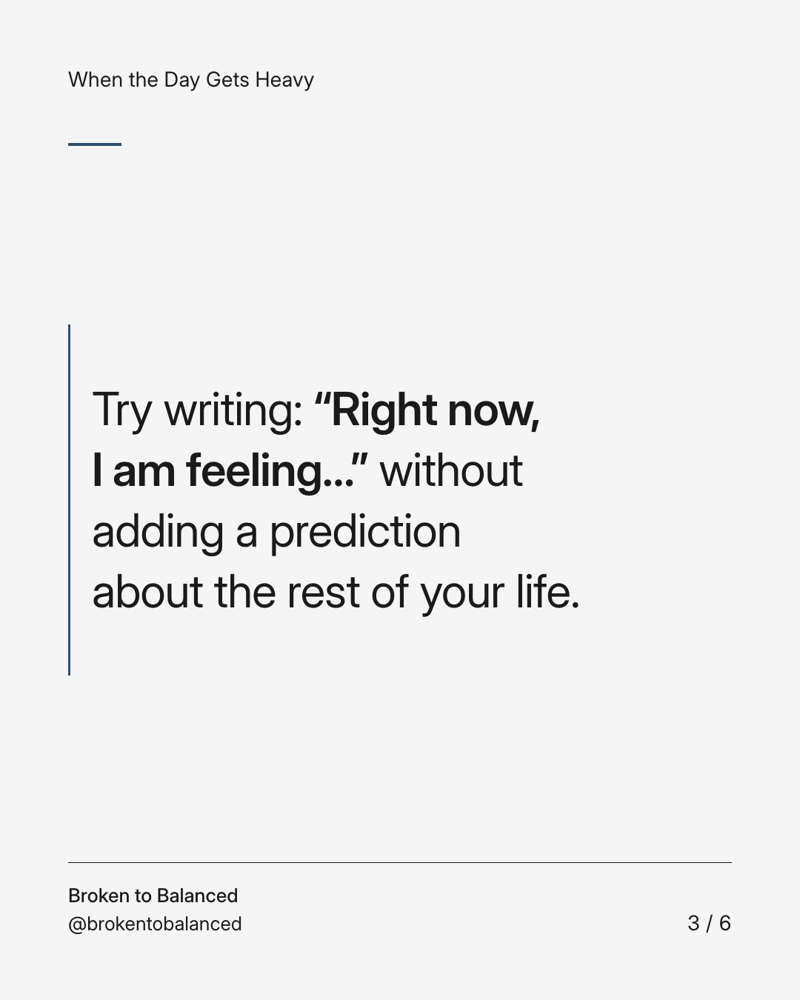
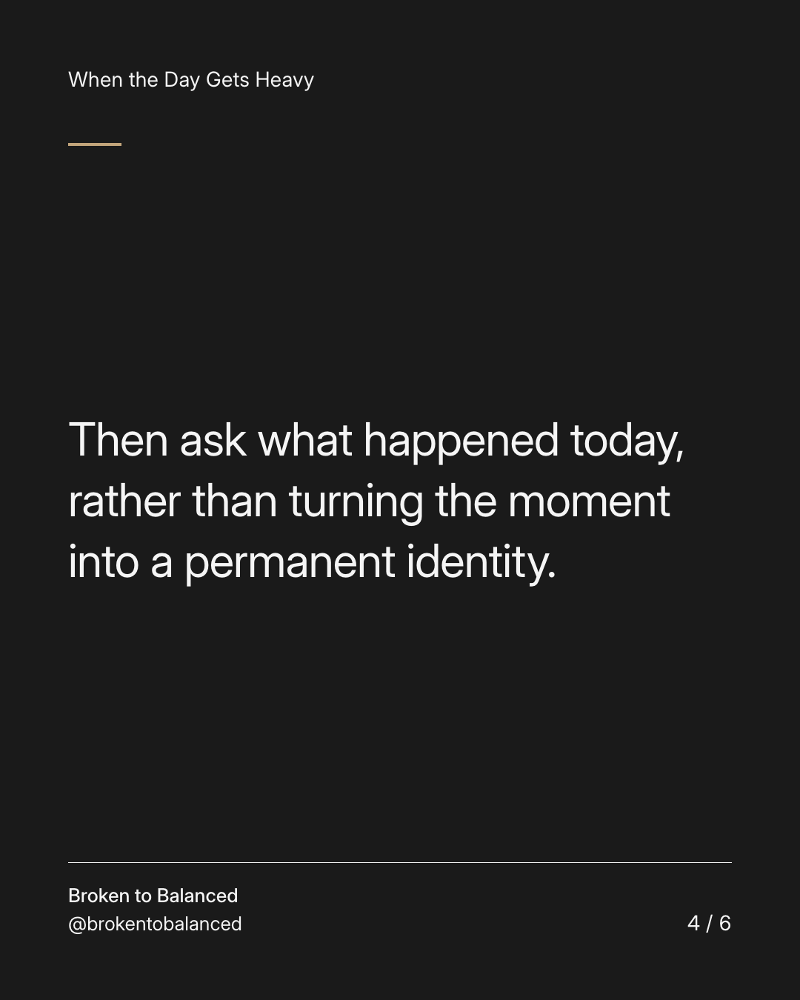
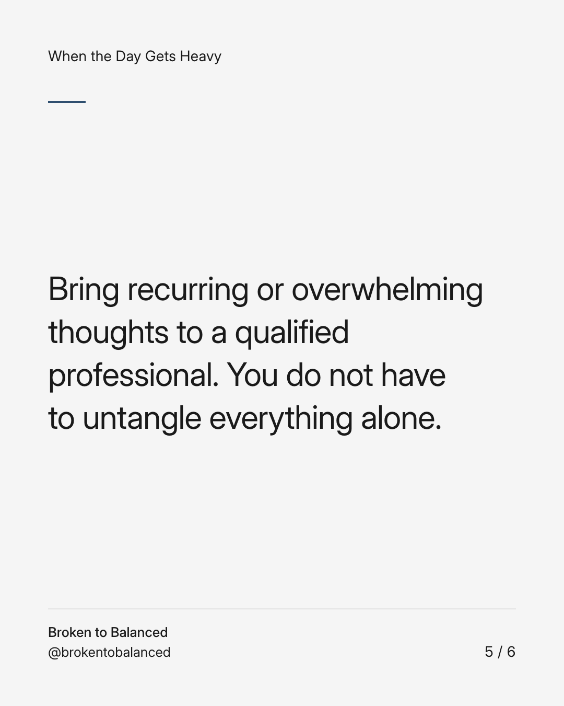
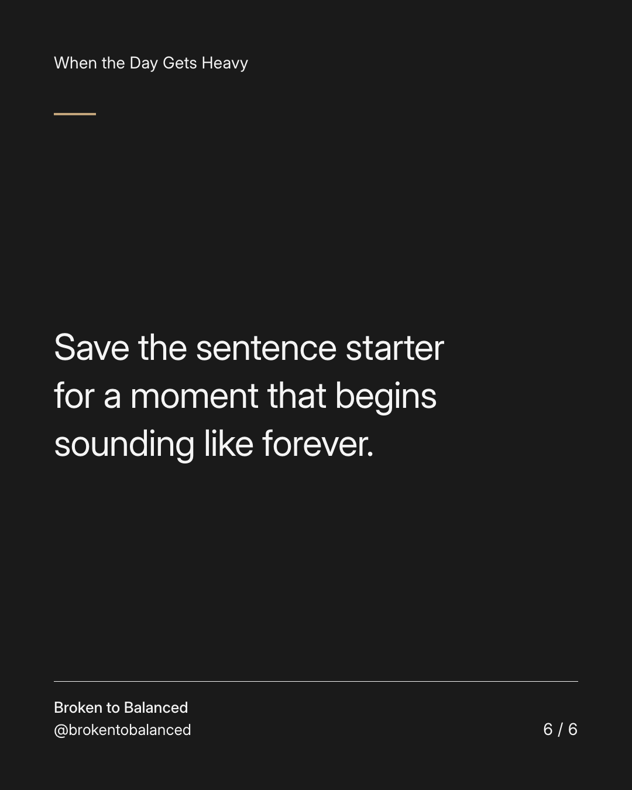

Exact text and accessibility text
A feeling can be real without every thought around it being accurate.
Slide 1 of 6. A feeling can be real without every thought around it being accurate.


Exact text and accessibility text
“I feel unwanted” and “Nobody will ever want me” are not the same statement.
Slide 2 of 6. “I feel unwanted” and “Nobody will ever want me” are not the same statement.


Exact text and accessibility text
Try writing: “Right now, I am feeling…” without adding a prediction about the rest of your life.
Slide 3 of 6. Try writing: “Right now, I am feeling…” without adding a prediction about the rest of your life.


Exact text and accessibility text
Then ask what happened today, rather than turning the moment into a permanent identity.
Slide 4 of 6. Then ask what happened today, rather than turning the moment into a permanent identity.


Exact text and accessibility text
Bring recurring or overwhelming thoughts to a qualified professional. You do not have to untangle everything alone.
Slide 5 of 6. Bring recurring or overwhelming thoughts to a qualified professional. You do not have to untangle everything alone.


Exact text and accessibility text
Save the sentence starter for a moment that begins sounding like forever.
Slide 6 of 6. Save the sentence starter for a moment that begins sounding like forever.
Exact caption
Plain-text fallback: select and copy the caption.